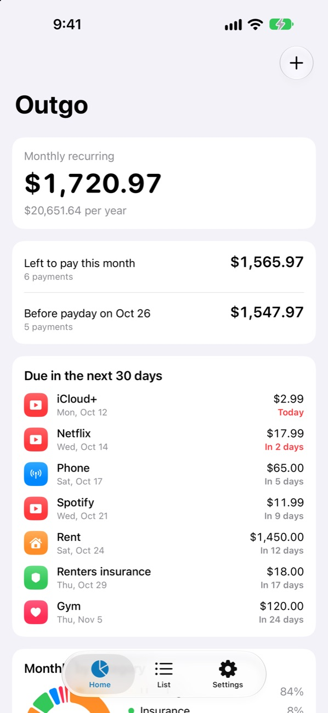
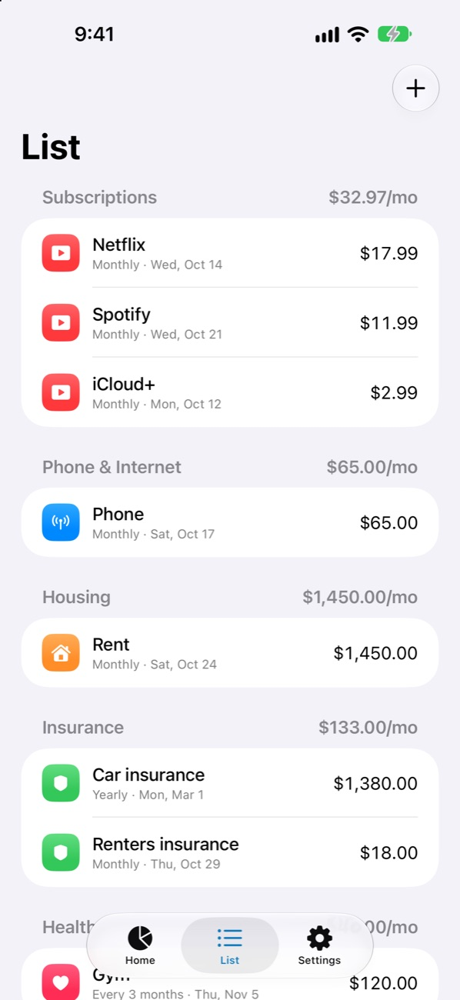
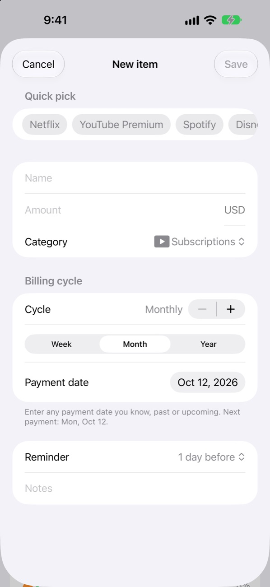
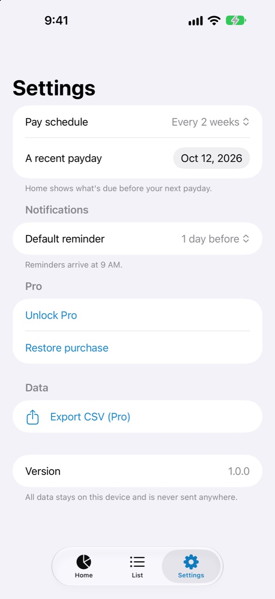

Know what your bills
add up to each month.
Subscriptions, phone, rent, insurance. Outgo is a bill and subscription tracker for iPhone that follows only the money that leaves on a schedule. Add each bill once and there is nothing to log every day.
Free for up to 10 bills · No ads · No account
What Outgo does
See what is due before payday
Know how much more will go out before your next paycheck. Works with monthly, biweekly, and weekly pay.
Track any billing cycle
Weekly, monthly, yearly, or every few months. Yearly bills are converted to a monthly amount in your total.
Bill reminders that arrive on time
Get a reminder at 9 AM on the day, or 1, 3, or 7 days before. Set it per bill.
Your data stays on your device
No bank or card connection and no sign-in. What you enter never leaves your iPhone.
Who it is for
- You pay for several subscriptions and are not sure what they cost in total.
- You want to know whether your account will cover rent, phone, and insurance before the next paycheck.
- You tried a budgeting app and stopped because logging every purchase took too long.
- You do not want to link a bank account to an app.
Screenshots




Pricing
Outgo is free for up to 10 bills. Pro is a one-time purchase, not a subscription, and adds unlimited bills and CSV export.
Support
If something is not working or you have a suggestion, send an email. Replies usually arrive within 2 business days.
Frequently asked questions
Where is my data stored?
Only on your device. Nothing is sent to a server, and deleting the app deletes the data.
Does Outgo connect to my bank?
No. You enter each bill yourself, once. Outgo never asks for bank or card details.
Is Outgo a subscription?
No. The app is free for up to 10 bills, and Pro is a one-time purchase.
How do I move to a new iPhone?
Restore from an iPhone backup (iCloud or computer) and your data comes with it. Pro also lets you export a CSV file.
I am not getting reminders.
Check that notifications are allowed in iPhone Settings → Notifications → Outgo. Reminders arrive at 9 AM on the day you chose.
I bought Pro but it is still locked.
Tap Settings → Restore purchase in the app. You need to be signed in with the Apple Account used for the purchase.
How do I get a refund?
Apple handles payments. You can request a refund at reportaproblem.apple.com.